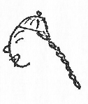
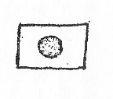
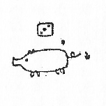
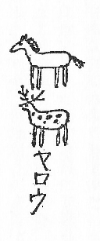
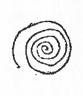
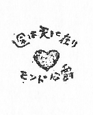

一、
誦するはこれ極楽浄土の歌。一九二九年二月十日、
巴黎なる
里昂停車場を発したる
地中海行特急第七九五号列車は、蒼味をおびた夜空に金色の火花を吹き散らしながら、いまや、アルルの
近郊に近い平坦な野原に朦朧とたたずむ
橄欖の
矮林のそばを
轟々たる疾駆を続けてゆく。
とある
隔室の中を差し覗けば、豆電気を一つだけ
点した混沌たる紫色の薄明りの中に、赤い筒帽を冠ったアルジェリの帰休士官、
加特力の僧侶の長い
数珠、
英吉利人の大外套、手籠を持った
馬耳塞人――それぞれクッションのバネの
滑かな動揺につれて、ひっきりなしに飛びあがりながら眠りこけているうちに、漫然と介在した若い男女の東洋人、これもまたはなはだ不可解な姿勢をたもちながら、前後不覚に眠っている様子。
男子なる方は、卅一二歳とも十七八歳とも見える曖昧しごくな発達をした顔の半面に、蒙古風の顴骨を小高く露出させ、身近に置かれたるマルセイユ人の手籠の編目へ鼻の先を突っ込んで睡眠しているのは、多分その中にしかるべき滋養物でも嗅ぎつけたからでもあろうか。かたわらなるは、十七八歳の令嬢ふうの美婦人、座席の上に横坐りして絹靴下の
蹠を広く一般に公開し、荷物棚から
真田紐でつるした一個二
法の貸し枕に
河童頭をもたらせ、すやすやと熟睡する相好は、さながら動物図鑑の
 画
画に描ける
海狸もかくやと思われるばかり、世にも愛らしき眺めであった。
さて、昨年
師走の上旬、風光るニースに至る
一〇〇八粁を縦走旅行するため不可思議なる自動車に乗じて
巴黎を出発したコン吉氏ならびにタヌキ嬢は、途中予期せざる事件勃発したるにより、予定の十分の一にもたらぬ里程において目的を放棄し、
薄暮、コオト・ドオル県ボオヌ駅より列車にて
碧瑠璃海岸へ向けて出発したが、図らざりき、列車の取捨を誤ったため、同夜半ふと目覚めれば、身は再び
巴黎なる
里昂停車場において発見いたしました、という目もあてられぬ惨状、日ごろ筋違いに立腹する傾向のあるタヌキ嬢は、ここにおいておおいに激昂し、「ニースなんぞ、いやなこった！」と、宣言したにより、やむなくコン吉は、
氷雨窓を濡らす
巴黎の料亭において七面鳥と
牡蠣を
喰い、小麦粉にて手製したる
すいとんのごとき雑煮を、薄寒き
棟割長屋の一室にて祝うことになったが、コン吉たるもの、風光
明媚、風暖かに碧波
躍る、
碧瑠璃海岸の春光をはるかに思いやって
鬱々として楽しまず、一日、左のごとき意味なき一詩を
賦して感懐をもらしたのは、
Autant de pluie autant de tristesse, Paris qui m'oppresse!
Fermons les yeux, R vons au printemps de Riviera,
Aux figuiers qui m
vons au printemps de Riviera,
Aux figuiers qui m riront, au vent qui passera,
A l'odeur du soleil sur les lavandes douces.
riront, au vent qui passera,
A l'odeur du soleil sur les lavandes douces.
さりながら念仏往生義にも、説くごとく、心に戒行を持って一向専念せば、いずれの弘願ぞ円満せざらん。ここに一念発起したコン吉が、
詩神の大威業力に依願し、前掲の拙劣なる短詩をコントラ・バスの伴奏にのせ、日ごと毎日わびしげに独唱するところ、凡夫の悲願、タヌキ菩薩もあわれと
思召し給いけむ二月上旬のとある天気晴朗の朝、避寒ならびにコン吉の脳神経に栄養を与えるため、地中海沿岸の遊楽地へ向けて再度出発することに決定、けだしコン吉が手籠の編目に、三昧の鼻の先を突っ込んで寝こけているのは、いまや大願成就して、
欣求の
南方極楽浄土におもむくその途中にほかならぬ。
二、問うに落ちて語るに落ちぬ絵入りの禅問答。どこやらで「
馬耳塞聖舎婁」と呼ぶうるさい声々、
赤帽を呼ぶ口笛と
鼓沓然鞄を
昇降場に投げ出す音、ひっきりなしに開けられる窓から吹き込む冷たい風……誰れやらの手で不意に触られて、
吃驚して飛びあがったコン吉がキョロキョロと
隔室のなかを眺むれば、列車はもうよほど以前にマルセーユに到着したものとみえ、相客は一人残らず下車し、あとには泰然と眠るタヌと自分のただ二人、日ごろ小胆なるコン吉は、なんということなく心細くなって、
「モシ、モシ」と、タヌをゆすり起こすと、タヌは、寝ぼけがちなる
眼瞼をしばたたきながら、
「あら、また巴里なの」と、神秘的なことをいう。
「いや、ここはマルセーユです。しかしね、あまり寝ると今度は、
伊太利の方へ行ってしまうから、ここらで目を覚ましてはどうですか、それにしても夜がふけたとみえて、だいぶ冷えて来たから燃料補給のため、僕はこれから
駅食堂へ行ってサンドイッチでも買って来るつもりです。――そちらに何かご注文がありますか」
「熱いショコラを一杯買って来たまえ」
「ショコラを一杯。――もし熱くなかったらどうしますか？」
「機関車へ行って暖めていらっしゃい」
「はい、かしこまりました」と、コン吉が、扉を開けて廊下へ出ようとすると、その一尺ほどの扉の隙間から、
凩のようにひょろりと吹き込んで来た一着の
銀鼠色のモオニング。――
黒琥珀の袋に入れた長い折り畳み式釣竿のごときものを小脇にかかえ、大きな自動車用の
塵除け眼鏡をかけ、
真紅の靴下にズックの
西班牙靴をはいた異装の人物。いきなりむずとばかりに、窓ぎわの座席に坐ったと思うと、ポケットから「ラ・トリブーナ」という伊太利語の新聞を取り出し、顔の前にさかさに拡げて読み出したが、やがて「くだらん！」と叫んで新聞をもみくちゃにし、その玉を
忌々しそうに足で蹴っ飛ばした。
大きな眼鏡からはみ出した顔の部分は、雨あがりのセエヌ河の水のようなやや黄濁した色をし、
削瘠した
顎の先には、よく刈り込んだアルフォンス十三世式の白い三角髯がくっついていた。
コン吉とタヌがあっけにとられて眺めているうちに、やや遠くで
錚々と鳴る発車の
電鈴、車掌の呼び子、機関車がどしんと重く客車の緩衝機に突きあたったかと思うと、列車は
滑かに
昇降場をすべり出し、貨物倉庫や車輛のそばをすり抜け、分岐線をがたがたと飛び越えてから、汽笛一声、マルセーユの市街の胴なかに明けられた長い
隧道のなかへ走り込んだ。
アルフォンス十三世は、蒼白い長い指で
顎を押えながら、眼鏡の奥からじろじろ二人の様子を見ていたがややしばらくののち、
気息で曇った汽車の窓ガラスへ、指で次のような、象形文字を丹念に書きつけた。

鹿皮の爪磨きで爪を磨きながら、ゆうゆうと十三世の動作を観察していたタヌは、そこで、いきなり立ちあがって窓のそばまでゆき、せっかくの自由画を
掌で拭い取ってから、その右上へ、

と、書きつけて、軽蔑したように肩をぴくんとさせた。十三世はしばらく考えていたが、また立って行って、今度は、

と、書いて、何か問いたげに、タヌの顔をみつめた。タヌは、
「おや！ やったね」と東洋語をもって叫んでから

と書いたが、これでは、通じないと思い返したものか、また別に、

を書いて、十三世の頭蓋骨のあたりを指さしてみせた。十三世はまだ何か書きつけたいらしく、しきりに指先をなめずりながら窓を睨んでいたが、残念ながら、ガラスの黒板は、国旗や豚や渦巻きや馬で満員で、もう立錐の余地もなかった。これには十三世もはなはだ焦慮の
体であったが、何を思ったか今度は、引きちぎるようにチョッキの
釦をはずして胸を押しひろげるとワイシャツの胸には、野球選手の運動服のように、赤い心臓と次のような文字が
刺繍してあった。

三、貴人痴呆にして物の道理の分らぬこと。公爵を先に立てたコン吉とタヌは、南仏の海岸に名だたる、キャンヌの町からやや離れたポッカの真暗がりの野原を、足で探りながら一歩一歩と進んでゆく。
闇の中から突然姿を現わす怪物のような
野生仙人掌に
胆を冷し、人間よりも丈の高い、巨大な
竜舌蘭の葉の
棘に額を打ちつけながら、なおもそろそろと道なきに道を求めて漂流すること一
刻あまり、やがて、密生した
西洋蘆の奥の闇の中におぼろに白い姿をさらし、死せるがごとくに固く
鎧戸を閉ざした城のような一棟の建物の前にゆきあたった。公爵は甲高い声でカラカラ笑いながら、
「や、とうとうつかまえた、こんなところに隠れていたのか、仕様のない
悪戯っ子だぞ！ お前は！」と愛撫するように扉のあたりを
軽打した。「去年は、あっちのユウカリの樹のそばへつないでおいたのですがね、今年はこんなところへ逃げ出して来ている……ほら、ご覧なさい。ちゃんと鎖で
結えつけておくんですが、いつも鎖を引き切ってしまう」
なるほど、
小庇の下には、緑青の
噴いた古ぼけた鐘が吊されてあって、その中心から細い鎖が、枯草の中をはって、門の方へどこまでも続いている様子、時々夜の闇をなめるように旋回して来るアンチーブの灯台の、蒼白い光芒の中に浮び出すその
荘館というのは、※
［＃「てへん＋夸」、37-下-12］［＃「※［＃「てへん＋夸」、37-下-12］」に傍点］門は崩れ鉄扉は錆び、前面の壁は
頂銃眼のあるあたりまで、
猫蔦の茂るにまかせた見るからにすさまじいさながらの廃墟、時刻はあたかも
丑満刻、万籟寂として滅し、聴えるものはホイホイというなにやら怪しい物音ばかり。コン吉は早や魂宙外、
「あの、ホイホイというのは何でしょう」と、震え声でたずねると、大公はしきりに扉の廻りを手探りしながら、
「あれはフィリップさんという
梟の夫婦。いま鳴いてるのは
夫人の方です」と、
囁くように答えた。「令嬢、この扉のそばに『
水仙荘』と彫りつけた標札があって、そのそばに呼び鈴があるはずですから、ちょっと探してみて下さい」
タヌは長い夜の探検に疲れたとみえ、草の上に
踞み込んでいたが声に応じて門のそばまで進み寄って、マッチをすり、手探りをしいろいろ工風を
凝しているふうだったが、間もなくすぐもどって来た。
「呼び鈴なんかなかったよ、それに、標札には『
三匹の小猿荘』と彫ってあるんだけど……」
「ほほう、それは奇妙です……でも水仙と猿なら大した違いではありませんね……それにしても呼び鈴がないとは……」と、じれったそうに
掌を
擦り合わしていたが、突然飛びあがるようにして、
「ああ、そうだ呼び鈴ではない、鐘をたたくのでした。では鐘をたたいてわれわれの到着を知らせましょう」といってジャン、ジャンと二度ばかり軽く鐘をたたいてから、何物かを期待するように腕組みした。しかし、門内はいぜんとしてひそまり返り、いつまで経っても一向人の出て来る気配もない。
氷のように冷たいアルプス
颪に、腹の底まで冷えあがったタヌは、そろそろ肝の虫を起こしたとみえ、ばたばた足踏みをしながら、
「もっと、ジャンジャン鳴らしましょうか」というのに、コン吉もその
尾鰭につき、
「誰れも出て来ませんが、鐘の音が聴えなかったのではないでしょうか」
「誰れにです」
「つまり、
屋内にいる人に」
「
屋内に人なんぞおりません」と、大公は自若。
四、天国に行きたければ小さな
孔より入るべし。およそ二三十も鍵のついた大きな鍵束を渡されたコン吉が、一つずつ鍵を扉のところへ押し付けてゴトゴトやっていたが、どれも大き過ぎるか小さ過ぎて合わない――もっとも合わないはずだというのは扉には始めから鍵穴なんかなかったのである。
「どの鍵も駄目です、合いません」
「なるほど、そんな事もあるかもしれない。錠前にだって、その日その日の気分というものがあるでしょうからね、横から入りましょう。さ、こちらへ！」と、一声、絶叫したかと思うと、公爵は飛鳥のように身を
翻して家の横について走りながら
西洋蘆の中へ消えてしまった。
「これは大変なことになった。せっかく公爵と別懇になって、この冬は
碧瑠璃海岸にふさわしい快適な生活ができると思ったのに、どうやらあの公爵の脳髄は大分混雑しているようだ。このままのめのめとあの人物の招待に応じていたらわれわれの身辺にまたもや意外な
椿事が起こるかもしれない、波瀾万丈は小説家の好むところだろうが、僕は元来、コントラ・バスの修業に仏蘭西へやって来たのだから、平和な生活の方が望ましい。どうだろう、幸い公爵は裏の方へ行ったようだから逃げ出すなら今のうちだと思うけど……」
西洋蘆の繁みの奥の方をキョトキョトと
偸視しながら、コン吉がいうと、タヌは一向意に介しないふうで、
「頭の工合が悪いからこそ、こんな海岸へ養生に来たのよ、だいいち、コン吉にしたところが、同じ目的でやって来たのだから、願ってもない良い
仲間じゃないこと、もし幸い君の頭が、あのひとの頭より少しでもましなら、せいぜい看病してあげたまえ、それこそ同病相憐れむっていうものよ、なにしろ公爵は、大きな
遊艇や、すばらしい競馬
馬を持っているそうだから、この冬はずいぶん愉快に暮らせるに違いないわね。ともかく君が何んといってもあの人が話していた『竜の玉』ってのを一目見ないうちは帰らないつもりよ。さ、早く鞄を持ちたまえ、
屋内へ入りましょう。ぐずぐずしないで！」と、早や小走りに歩き出す。
コン吉はせんかた泣く泣く、大きな帽子箱と鞄とラケットを両手にさげ、とぼとぼとタヌのあとについて
荘館の横手に廻ってみると、大公におかせられては、いまや、
欅の大掛矢を振い勝手口の階段の横について、石炭を汲み入れる二尺四方ほどの鉄扉に対して大破壊を行なっている様子。
やがて、鉄扉は長らくの打撃にたえかねたとみえ、ぐゎらりと内部に落ち込んだ。様子見澄ました公爵は、おもむろにハンカチで指をぬぐってから、コン吉に、
「さ、どうぞお入り」と挨拶した。
コン吉が恐る恐る暗い
孔の中を覗いてみると、はるか七八尺も底の方に、
硝子の
破片のように尖ったものすごい塊炭が、ぞろりの牙をむいているのが見えたから、
「いいえどうぞ、ご主人から」と、懸命に辞退した。
「ご遠慮も時によりましょう。まずまずお通り下さい」
「でも、なんですか、この穴は少しちいさ過ぎると思うんですけど。……それに、多少不潔でもありますし……」
公爵は爪をかんで、しばらくコン吉の顔をみつめていたがやがて、
「なあに、いざこざはないさ」とつぶやきながら、壁に立て掛けてあった
件の細長い袋から、
菩提樹の杖に
仕込んだ、
夜目にもどきどきするような三
稜の
細身の剣を抜き出して、コン吉の鼻っ先へ突きつけ、さて「這え！」と、もの柔らかに命令した。
コン吉は
吃驚敗亡、何の否やもあらばこそ、仰せのごとくに四ん這いになると、引き続いて、
「穴に頭を突っ込め！ お尻をもたげて！」という厳命。されば、コン吉はお尻をもたげ、
麒麟が池へ水を飲みに来たような姿勢をとると、公爵は、その尻を、
「おう！」という掛け声もろとも、
三稜剣で横
薙ぎに引っぱたいたから、コン吉はたまらない、
「うわア！」と一声、悲痛な叫びを地上に残して逆落しに石炭
孔の闇の中へと消えうせた。
五、二月の空は
南方特有の深い紺碧に澄み渡る。ミモザと駝鳥の首のような、とぼけた
竜舌蘭の花が、今を盛りと咲き乱れるキャンヌの公園では、はや朝から陽気な
軍楽隊、エドゥアール七世の銅像の前を、テニス服を着て足早やに行くのは隣りの別荘の
英吉利娘。アルパカのタキシイドを着てひょっこり
賭博場から出て来たのは、多分昨夜、コン吉から、三十
法ばかり巻きあげたあの憎い
玉廻しであろう。
コン吉が石炭庫の石炭で手ひどくやられた、右足を軽く
跛にひきながら、公爵とタヌのあとに附きそって、ブウルガムの
広場をひょろめき下り、しかるのち、オテルサヴォイの
露台に坐り込んで、アルベエル・エドゥアールの
突堤に続く
棕櫚散歩道をおもむろに眺めるところ、行くさ来るさの市井雑爼は今日もまた
寝巻的散歩服の令嬢にあらざれば
袖無寛衣の
夫人、老いたるも若きも珍型異装を誇り顔に
漫々然々と練り歩く様子、異装にかけてはあえて人後に落ちざるタヌの
身装はとみてあれば、今日はまた一段と趣向を凝らしたとみえ、腰の廻りに荒目昆布のごとき
びらびらのついた
真紅の
水浴着を一着におよび、クローム製の
箍太やかなるを七八個も右の
手頸にはめ込んだのは、間もなくこの席にて開催さるべき sporting club の茶話会に対する用意と見受けられた。
さて、
少しく精神に異状を呈したと思われる、フィンランドの公爵、モンド氏の古き
館に捕虜となったコン吉ならびにタヌのその後の朝夕は、直接の肉体的被害はすくなかったが、見る事聞くこととかく
頓珍漢なことばかり、一口にいえば、やや神秘的とも幻想的ともいえる
雰囲気の中に、ただ夢に夢見る心持、昨夜も夕景から「
三匹の小猿荘」の食堂において、
聖ジャンの祭日にちなんだ大饗宴があると披露されたにより、
空腹い腹をかかえ、食堂の長椅子にたぐまって
片唾をのむところ、
薦延数時間、ようやく十時真近になって、蓋付きのスウプ
容れと三人前の食器を、大いなる銀盆にのせて運び出して来た公爵、ルイ十五世ふうの
卓の上にそれを適当に配置してから、
「
私はこれから、次の
肉皿の仕度にかかりますから、もう少々お待ちを願いましょう」といって、脚の一本ない古風な
翼琴のそばへ行き、ものしずかにブラアムスの「子守歌」を弾き始めた。
「
肉皿には
鶫を差し上げようと思っているのですが、実はその鶫なるものはまだ
糸杉の
頂の巣の中で眠っているのです、なにしろね、鶫なんてやつは
目覚いからこうやって、子守歌でも聴かせて、ぐっすり眠らせておこうと思うのです」
子守歌は不可思議極まる装飾音の中で跳ね廻り、随所で奔放自在な
転調を行ないながらようやく最後の静止音までたどり着いた。
すると公爵は、上品な
白髪頭の真中を見せて一
揖し、
「ほどなく
肉皿も参りましょう。では紳士ならびにご令嬢、どうぞお席へ、
前菜でも始めることに致しましょう」と威儀を正して
披露した。
豊満な期待と共にセルヴェットを膝の上に拡げたコン吉が、白いセエヴル焼のスウプ容れの中をそっと覗いてみると、その中には、クレエムのかかった血のような赤い薔薇が三輪盛られてあった。
というわけ。
幻想的な方はまあまあそれでよろしいとして、さて、現実的な方は実に手のつけられないほどの被害があった、というのは、モンド大公は二人をば、日がな毎日、キャンヌの町中を引き廻し社交界に紹介するという名目のもとに、文学趣味の夫人に対しては（日本の最も著名なる小説家である）と紹介し、運動趣味の紳士には（これは日本から派遣されたゴルフの代表選手です、どうぞよろしくお引き廻しのほどを）と推薦し、有名なるキャンヌの
賭博場の
経営者、アンドレエ氏に対しては（この夫妻はバカラの名人ですよ、手を焼かないように用心なさい。なにしろ、東洋の魔法を心得ていられるのだからね）と人によりその日の気分によって、自由自在な紹介をするところから、コン吉は、いまやキャンヌにおいては、前述のもののほか、有名な天文学者であり、世界一流の馬術の名人であり、曲芸師――予言者――生花の先生――
釣魚家――コルネット吹き――映画の監督――発明家――陸軍砲兵少佐――油断のならぬ間諜……と、
天が下にありとある名流を一手に引き受け、キャンヌの社交界を向うに廻して、必死の格闘を続けることになったという次第。
されば公園のベンチでは見も知らぬ夫人に「近ごろ、お作の方はいかがですか」とか、突堤の鼻では老紳士に「沼で
姫鱒を釣りますには鋼鉄製の英国ふうの釣竿より、どうも
日本の胡麻竹の釣竿の方が……」とか思いもかけぬ訊問の奇襲にあうによって、コン吉の市中の散歩は、毎分毎秒、さながら薄氷を踏む思い。
今日この
茶会で「
西洋蘆市
運動協会」の会長を招待するというのは申すまでもなく、公爵が例の自在なる幻覚によって会長その人に、コン吉を紹介しようという計画に違いない。さてコン吉は、そもそも今日は水泳の選手になるのであろうか。
飛行艇の技師になるのであろうかと、しくしく痛む腰を撫でながら、されば
戦々恟々。
六、カランカランと鳴る鐘は
旅館や
下宿の昼餐の合図。あちらの
正通り、こちらの丘でそれが音色さまざまに触れ出すと、
散歩道をうろついていた Jupe-pyjama キャフェの派手な大日傘の下にいた Bol

ro さては海馬島の海馬のように砂浜に寝ころんでいた
裸人種に至るまで、渚から水がひくように一斉に風景の中から姿を消してしまう。
飛入台付、
大筏の上にいたスポオティング・クラブの面々も、口々に「いずれ後刻」といいながら、どぶん、どぶんと海に飛び込んで昼飯めがけて泳いで行ってしまった。
筏の上に残ったのは三人の半狂人、いうまでもなく、公爵、タヌならびにコン吉の組合せだけ。
籠手をかざして眺むれば、キャンヌの町を囲むレステレエルの山の斜面の裾から
頭頂まで、無数に散在する粋で高尚な
荘館と
別荘――その間では、いまや霞のような
巴旦杏の花盛り、暖い太陽の下では枝もたわわに
檸檬が色づき、背景には雪の山頂をきらめかすアルプスの連峰、コルクと松の木の生えたサント・オノラの朱色の岩は、紫紺色の海にその
容脚を浸し、はるかなる水天一髪の海上には
鴎のごとくに浮ぶ一艘の
三檣帆船――さながら夢のようなる春景色、
和やかな日射しにほどよく暖められたコン吉の脳髄は、そろそろと睡気を催したとみえ、どうやら混沌たる状態になって来たので、
「どうもうっとりするほどいい心持ですね、見れば公爵も、筏の上で船を漕いでいられる様子、われわれもひとつ、今日は、社交も昼餐も抜きにして、ゆっくりとここで昼寝をしてはどうでしょう。これが社交疲れというのかして、
掌は痛むし、首筋は腫れるし、胃袋もどうやら紅茶臭くなっているようだ、その他の部分も少し休養させなくては
護謨が伸びてしまう」とコン吉がいうと、タヌも朦朧たる声で「ではね、そこへ（臨時休業）の札を出しておいてちょうだい、よく窓掛けを閉めてね」とぐるりと向うへ寝返りを打ったと思うと、はやすやすやと寝入ってしまった。
「社交なんぞ
鱶にでも喰われろ、公爵は腹がへったら、一人で
陸まで泳いで行くであろ。こっちはここで睡るばかり」
四辺関わぬ大
欠伸をしてから、筏の上に長くなって、
鼾をかき始めた。並々ならぬ筏の動揺と、ぞっとするほど冷たい波の
潮沫で驚いて眼を覚ましたコン吉がキョロキョロと、
四辺を眺めるところ、どうやら海上の風景が平素に比べてなんとなく単調な趣を呈しているというのは、筏は、
陸からそれをつないでおく太いロップを断ち切って泳ぎ出しいまやアンチーブの岬のはるか沖合を漂々閑々と漂っている様子。
あっと仰天したコン吉は、たちまち思慮分別を失い、
「やあ！ 難船だ、漂流だ！」と
時化にあった
臘虎船の船長のように、筏の上、
地駄婆駄とうろたえ廻ったが、いかにせん、筏はキャンヌの岸を離れることすでに
四粁余り、叫ぼうにも陸に声の届こうはずはなし、元来この筏なるものは、
陸真近につないで紳士淑女の飛び込みならびに休憩の用に供するために造られたものゆえ、
櫓櫂も帆もあろうはずはない、コン吉の狼狽には頓着なく筏は
己が好むにまかせてなおも自在に漂ってゆく。
コン吉の声に夢さまされたタヌはこれも意外な環境に驚き、
「あらま、大変ね、ずいぶん広いわね」と、眼をみはりながら「でもどうしてあのロップが切れたのかしら、ずいぶん丈夫そうな様子だったけど」というと、今まで寂然として
顎の三角髯をひねってた、公爵は、もの柔らかに、
「いや、綱は
私がといたのです、綱のせいではありません」と答えた。
「あらま、公爵！」
「どうしてまた！」と、コン吉とタヌが左右から詰め寄ると、公爵は波に戯れる鴎の群れを眼で追いながら、
「このへんには、海岸にそって幅の広い
海流がありますから、それに乗りさえすれば黙っててもニースまで行きますから心配なさることはありませんね」
「でもね、僕の荷物はみなキャンヌに置いてあるのですから、ちょっともどって持って来たいのです……つかぬ事を伺うようですが、やはりあっちへ帰る
海流っていうのもありましょうか、もし、ありましたらここらでちょいと乗り換えをして……」と、コン吉はなんとか公爵をなだめてキャンヌに引返そうという方寸、公爵はにべもなく、
「こうなった以上、あなた一人のために筏を始発駅にもどすというわけにはゆきませんね、いいじゃないですか、ニースへ行きましょう。明後日から、ニースでは有名な
謝肉祭が始まりますからね、率直に申しますと、この筏でニースの
謝肉祭を見物に行くのが私の希望なのです、自動車もいやなら、汽車もいや、飛行機、ヨット、馬、……みないやです。どうぞそう思っていただきたい」
ああ、またしても、公爵はそろそろ目の色を変え、口調もおいおい切り口上になってゆく様子、このうえ逆らうと、海になぞ投げ出されまいものでもない。タヌはしきりに「黙れ、黙れ」と、コン吉に眼で信号をする、ではもう諦めるより仕様がないのであろう。コン吉は心細い声で、
「大丈夫でしょうね、乗り越すことはないでしょうね」と、念を押すと、
「間違ったら、
伊太利へ行くまでです、それで駄目なら南米ネ」と、不興げに横を向いてしまった。
太陽はアルプスの巓を赤紫色に染めて、ようやくその向うへ沈もうとしている、漫々たる
海面は青色から濃い灰色に変り、はるかなるフレエジュの山の上に薄黒い雲が徂来するのは、多分今夜、
西北風でもってこのリヴィエラ一帯を吹き荒らそうとする
風神の前芸なのであろう。
七、ニース市の光栄、海上より貴人の一行到着さる。苦心
惨憺疲労
困憊、約十七八時間近くも荒天の海上を漂流したすえ、マルタ島から帰って来た
牡蠣船に拾われてニースの海岸に到着したのは翌日の午後四時ごろ、フィンランドの公爵と二人の上品な東洋人が、筏に乗ってニースの海岸に漂着したという事件は、目撃者には笑い話の種をあたえ、噂だけ聞いた庶民にははなはだ
伝奇的な興味と昂奮を感じさせた、そのうちでも優秀高雅なニースの社交界に最も感動を与えたのは、その日の「
小ニース人」の夕刊の「社交室」に掲載された次のような新聞記事であった。
本日午後四時四十五分ごろ、ニース市は、予期せざる光栄ある訪問を受けることになった。その貴賓とは、排水量六千噸を有する軽巡洋艦のごとき遊艇に搭乗して、カッシニ河岸に到着せられたる支那の王族張氏夫妻、ならびにフィンランドのモンド大公爵である。一行は上陸後、最も完全なる静養をとるため、直ちにジョルジュクレマンソオ街なる平和病院に入院された、ちなみに一行は北極探険よりの帰途なる由
八、虎を指して猫と呼ぶおたんちんぱれおろがす。気息
掩々たる三着の
水浴着が、オピタル・ド・ラ・ペエに運び込まれ、一様に
39度の一夜を明かしたその翌朝、一行は種々なる人士の光栄ある訪問を受けた。
まず劈頭に出現したのは、大きな花束を持った「
小ニース人」写真班であった、写真班の希望するところは「花束を持って笑った顔」の写真が一枚撮りたい、というのである。
さればコン吉とタヌは、
水浴着の胸に薔薇とミモザの花束をいだき、この世にある限りの「笑い顔」をして見せたが、写真班は、どれもこれも一向笑っているようには見えない、というのである。その後もいろいろと苦心経営したが、やがて、反対においおいと腹立たしくなって来たので、笑う方はやめにして普通の顔の前でマグネシュウムを焚いて勘弁してもらった。
公爵の方は、これはしきりにおおげさな身振りをし、笑った顔、威張った顔、泣いた顔と、数種の撮影を強要したが、この方は、多分始めっから取り枠の中に乾板がなかったのであろう。翌朝の新聞には、いずれの顔も掲載されていなかった。
その次の訪問者は、
及び同夫人、同令嬢であった、フオル・ボロン氏は
茴香酒の匂いのする赤鼻の肥大漢、同夫人は猫背の近視眼、しかしながら、同令嬢はさながら二月の水仙のごとき、純白の
広東縮緬の客間着に銀の帯を〆め
憧憬に満ちたあどけない眼を見開きながら、希望の条々につき、綿々とコン吉をかき口説くのであった。
令嬢が希望する条項は、コン吉にとってははなはだ当惑千万、かたがた、多少ならず自尊心というものすら傷つけられる傾向があったので、コン吉にはコン吉の意見があるのである。がしかし菓子箱の蓋の三色版画の中にでもいるようなこの
愛ぐしき令嬢の願いを、当惑や自尊心だけで、拒絶していいものであろうか。いずれが是か、いずれが非か、これは、語るままに、令嬢に語らしめて、読者諸賢の判断を乞うよりほかに道はないのであろう、ともかく、この令嬢は、支那ほど神秘的で幻惑的で、そのうえさらに魅惑的な国は、この広い世界に、断じて二つとあるはずはない。
だから、クラブントの「光緒皇帝」はもちろんＡ氏の「支那の暗黒面」Ｂ氏の「
上海にて」Ｃ氏の「青竜刀と弁髪について」その他Ｄ氏、Ｅ氏、Ｆ氏、Ｇ氏と……みな再読したが、支那に関する書籍をよんでいる間は、吾身が吾身でないような説明のできぬ微妙な心持がする、というのである。
「ですから、あたし、今度の
謝肉祭には「
支那の旅行」という題の
山車を出したいと思うんですの、
山車のうえの飾り物を三つに区切って、右端は支那の子供が大勢ソラの花の下でダンスをしているところ、真中は五重の塔の中で、若い男の支那人が
六絃琴を弾いて、綺麗な
令嬢が歌を唄っているところ、左の端は青竜刀で罪人の首を斬っているところ……まあ、大体こんなふうなんですの、そいで子供も令嬢も昨日
西貢から着いた
安南人に頼むつもりなんですけど、この
山車の前に、どうしても、繩でしばられて先に立って行く
支那の大官がなければ気分が出ないと思うんですの、最初はね、お父さまにお願いするつもりだったんですけど、お父さまは、どうも気が進まないとおっしゃるんですの。それにこんな鼻の赤い支那人なんかありませんでしたわ、どの本にも！ なんといってもこの役は、本当の支那の方にやっていただくに越したことはありませんわね。ですから、本当に申し訳ないんですけど。……ぶしつけなんですけど……」
ボロン氏も猫背夫人も、思い余ったというふうに、
「申し訳ありませんが……ぶしつけですが……なにしろ娘が……いえ、なにその……」
と、ひたすら頼み入る、さすがのコン吉もここにおいて、憤然と
蹶起し、
「あの申し訳ありませんが、僕は支那人ではありません。日本です。どうもとんでもない話だ。だいいち……」と
憤り立ったが、令嬢は相変らず涼しげな眼をみはりながら、
「あら、ちっともかまいませんことよ」と、慰めるようにささやいた。コン吉は、ここで、寝床の上に起きあがり、「そもそも日本は万世一系の……」と日本の日本たる
所以を弁護しようとしかけたが――ああコン吉よ。諦めるがよろしい。一体何を証拠にしてコン吉が支那人にあらずして日本人であることをこの場で証明できるであろう。ああ、
旅行券！
しかし、その旅行券さえ「
三匹の小猿荘」の寝室の鞄の中にはいっているのである。
九、日本人が欧洲で活躍した一つの実例。マッセナの広場に陣取った、クロワゼットの国墨大隊の軍楽隊が一斉に「マルセーユ」を奏し始めた、ニース市を縦に貫く
勝利大通りに今年の「
謝肉祭の王様」がゆらぎ出したのだ。
欧羅巴に名だたる第四十六回目のニースの謝肉祭の幕はいま切って落されたのだ。大通りの両側には士農工商、
貴縉紳士、夫人令嬢老若童婢と、
雲霞のごとく蝟集する中をよろめき歩く貸椅子屋の老婆、
行列の
番附を触れ売りする若い衆、コンフェッチを
鬻ぐ娘など肩摩轂撃の大雑踏大混雑、
行列の先駆を務めるのは、長い
喇叭を持った凛々しき六人の騎士、その後に続くは白兎の毛で縁取りした、空色の
天鵞絨の長マントオを着、王冠を冠った「
謝肉祭の女王」いよいよ今年の
大山車「マダマンゴオの娘」が
軋り出せば、家の窓さては、屋根の上からも
大山車目がけて投げつけるコンフェッチの大吹雪。拍手に口笛――「三つの
嘴の鵞鳥」「マスコット」はそれぞれ趣向を凝らした
大山車がゆるぎ出しさて「
巴里人の生活」という最初の
小山車が通り過ぎると、その後から、胸に竜、背中にと、金糸銀糸で刺繍した長
袍を着、赤い
緞子の袴を穿いて現われて来たのはコン吉であった、
西班牙の海賊の扮装をした公爵に腰繩を打たれ、長い弁髪を朝風になぶらせながら、鬱々とした面持で、コンフェッチの吹雪の中を進んで行った。――広場のある方へ。
 」三一書房
」三一書房